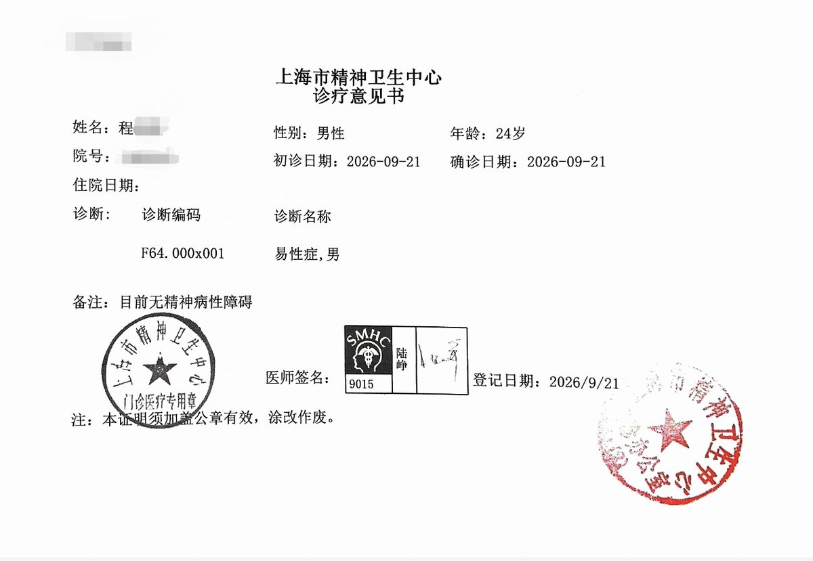
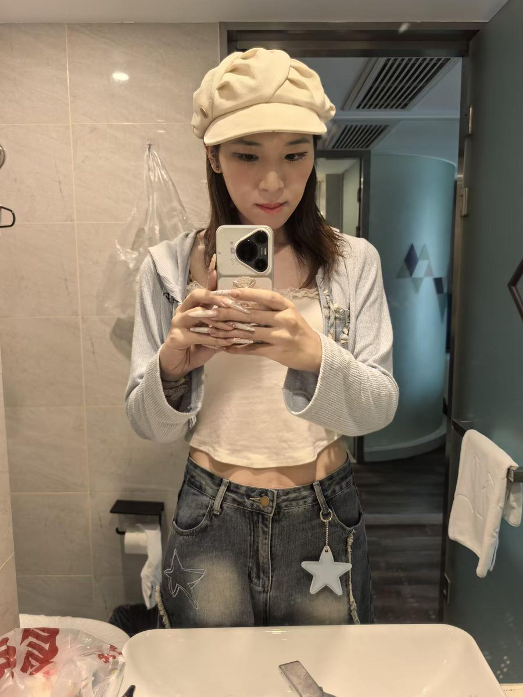

嫣敏🍥（主页抽奖进行中）
@yanmin1105
@supersuger8 为什么是易性症，男啊，MTF应当是F64.000x002易性症，女（易性症，男转女）才对


supersuger🏳️⚧️
@supersuger8
我也有属于我的诊断证明了。
我这个雷霆穿搭和妆容，一进诊室王飚就问我是不是来开诊断证明的，然后就问了一点儿简单的问题；陆峥连四宫格都没让我做，下午去找他就给直接开证明了。
明天终于可以去411约手术了，现在就躺在酒店的床上傻笑... https://t.co/M7g6bpixrV